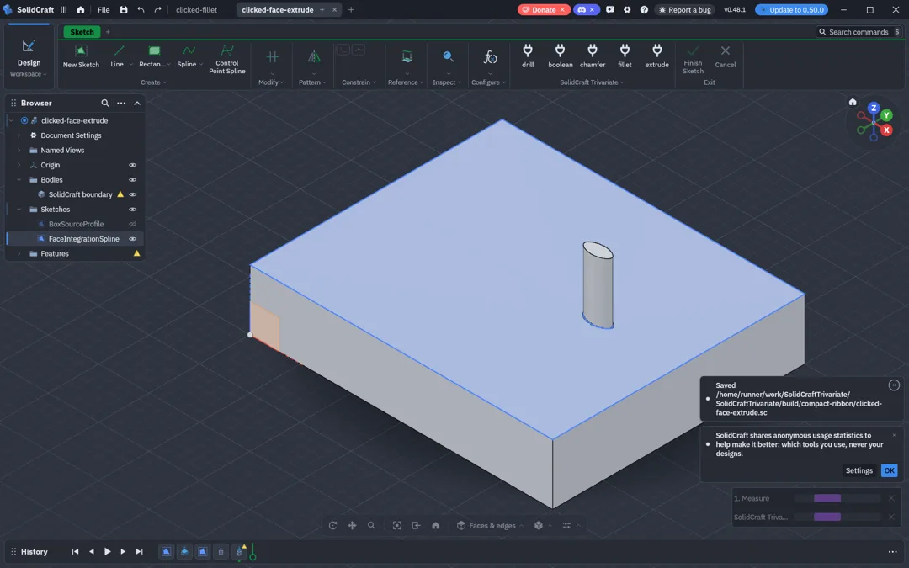

Edit a bracket from the compact ribbon
This exercise uses the sharp bracket supplied with the plugin. Work on a copy. You will add material on a wing and identify the geometry that can be passed to analysis. The modeling dimensions below are in millimetres.
Plugin operation illustrations
These thumbnails are the vector images packaged with the plugin. They identify its own commands in the plugin ribbon group; the integration does not replace or rebind SolidCraft’s built-in Sketch tools.
Extrude |
Drill |
Boolean |
Chamfer |
Fillet |
Analysis |


Open the example
Install SolidCraft 0.48.1 and check that both solidcraft and
solidcraft-cli are on your path. Download the ZIP from the
plugin build
and extract the GitHub artifact wrapper. Keep the inner plugin ZIP intact.
From the matching project checkout run:
python3 scripts/solidcraft_compact_desktop.py /path/to/solidcraft-trivariate-0.5.0.zip
SolidCraft opens the example in a separate profile. The default sketch view shows the geometry you draw. To inspect its proposed partition, use the preview procedure in SolidCraft viewport and sketch bridge.
Make a feature from a face sketch
Select a planar wing face and start a sketch on it. Draw a small closed rectangle within the material. Finish the sketch. The face attachment identifies the owning body and the direction of the extrusion.
Open Extrude, choose Add material, and enter 2 mm. Rotate the bracket until the side of the raised pad is visible. Undo the operation, reopen Extrude and choose Remove material to leave a pocket instead.
To try a spline, start another face sketch. Close the fit-point curve at its first point and finish the sketch. Use a regular, simple profile. The modeling command reports profiles outside its admitted family.
Finish sketch editing before choosing Fillet or Chamfer. Pick an edge of the body, enter the radius or setback, and leave Follow tangent edges enabled to continue across tangent portions of a rim. A face selection applies the operation to its boundary.


SolidCraft displays the result using its own viewport and tessellation. The visible solid and the model used for analysis have separate records.
Continue with Run a native analysis and inspect it in FieldCraft for the mechanical workflow and Which model does the solver see? for the distinction between a complete trivariate result and a trivariate cutting tool.